Navigation Opquast V5 - série 360
Présentation - Navigation Opquast V5 - série 360
Slide 1 sur 27 - Navigation
Slide 1 - Navigation
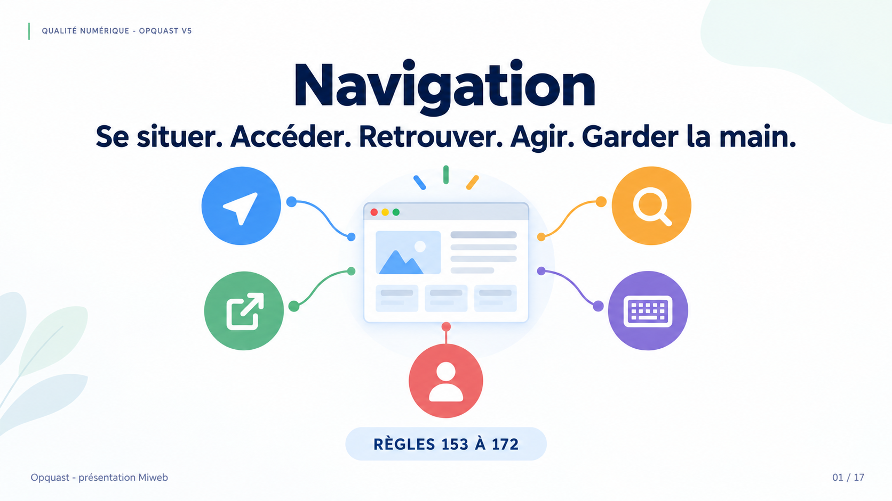
Thématique
Navigation
- Se situer.
- Accéder.
- Retrouver.
- Agir.
- Garder la main.
Périmètre
Règles 153 à 172.
Message à retenir
Se situer. Accéder. Retrouver. Agir. Garder la main.
Enjeu
- Naviguer ne se réduit pas à utiliser un menu.
- L'utilisateur doit pouvoir comprendre sa position, atteindre l'information, accomplir son action et conserver la maîtrise de l'interface.
- Atteindre une page ne suffit pas si les repères disparaissent ou si l'interface prend la main.
- Les règles couvrent donc l'orientation, l'accès, l'action et le contrôle du parcours.
Transition
Ces cinq conditions structurent un parcours qui reste compréhensible et maîtrisable.
Slide 2 - Cinq conditions pour garder son chemin
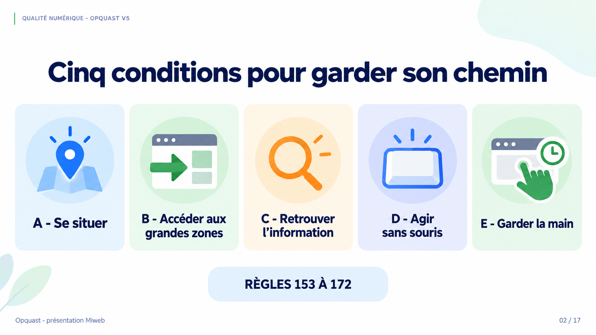
Les cinq blocs
- A - Se situer
- B - Accéder aux grandes zones
- C - Retrouver l'information
- D - Agir sans souris
- E - Garder la main
Périmètre
Règles 153 à 172.
Message à retenir
Cinq conditions organisent les vingt règles de Navigation.
Logique du parcours
- Une personne peut arriver directement sur une page profonde.
- Elle doit d'abord se situer, puis atteindre ou retrouver l'information.
- Elle doit pouvoir agir sans souris et rester maîtresse des fenêtres comme du temps imposé.
Continuité
- Chaque condition soutient la suivante : se repérer permet d'avancer, puis d'agir.
- Une rupture à l'une de ces étapes peut interrompre le parcours.
Transition
Tout commence au moment où l'utilisateur arrive sur une page.
Slide 3 - Entrer sans obstacle
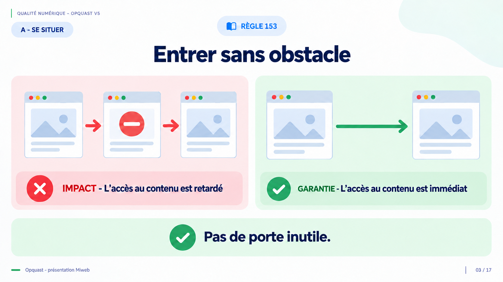
Règle 153
Si les contenus ou services ne sont pas réservés à un public spécifique, leur accès est immédiat.
Impact
L'accès au contenu est retardé.
Garantie
L'accès au contenu est immédiat.
Message à retenir
Pas de porte inutile.
Situation
- Un lien vers un contenu public doit conduire directement à cette ressource.
- Un écran d'accueil temporaire, un avertissement injustifié ou une étape sans utilité retarde le parcours.
Impact du non-respect
- L'utilisateur subit un clic et une attente avant d'atteindre ce qu'il a demandé.
- Cette rupture augmente le risque d'abandon.
Ce que garantit la règle
- L'accès est immédiat lorsque rien ne justifie une restriction liée au public.
Transition
Une fois entré, l'utilisateur doit encore pouvoir retrouver un point de départ.
Slide 4 - Toujours pouvoir revenir
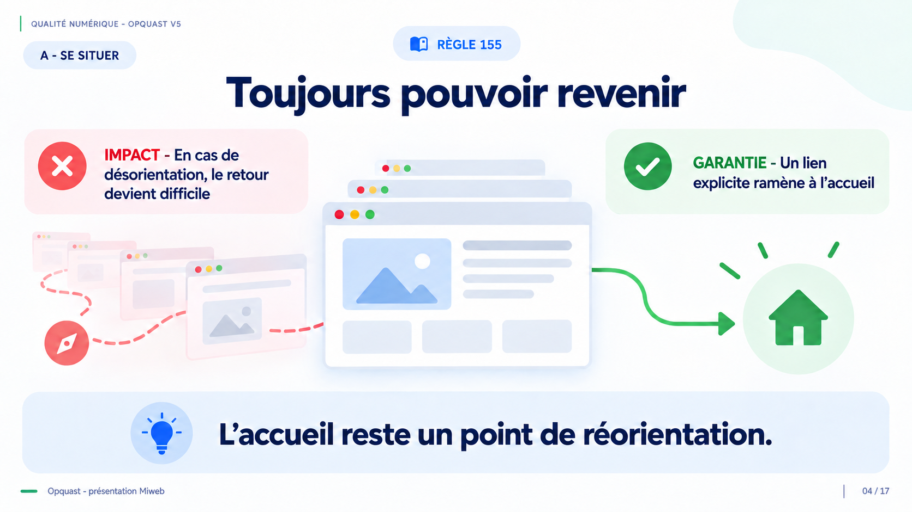
Règle 155
Il est possible de revenir à la page d'accueil depuis toutes les pages.
Impact
En cas de désorientation, le retour devient difficile.
Garantie
Un lien explicite ramène à l'accueil.
Message à retenir
L'accueil reste un point de réorientation.
Situation
- Une personne arrive souvent par un moteur de recherche, un message ou un favori, sans passer par l'accueil.
- Depuis cette page intérieure, elle doit disposer d'un moyen explicite de revenir au point de départ du service.
Impact du non-respect
- En cas de désorientation, la personne doit chercher un autre moyen de revenir et risque de quitter le site.
Ce que garantit la règle
- Un lien vers l'accueil reste disponible depuis chaque page.
- Le contrôle Opquast prévoit ce lien indépendamment d'un éventuel lien porté par le logo.
Transition
Revenir ne suffit pas : la page courante doit aussi être située dans l'ensemble.
Slide 5 - Savoir où l'on est
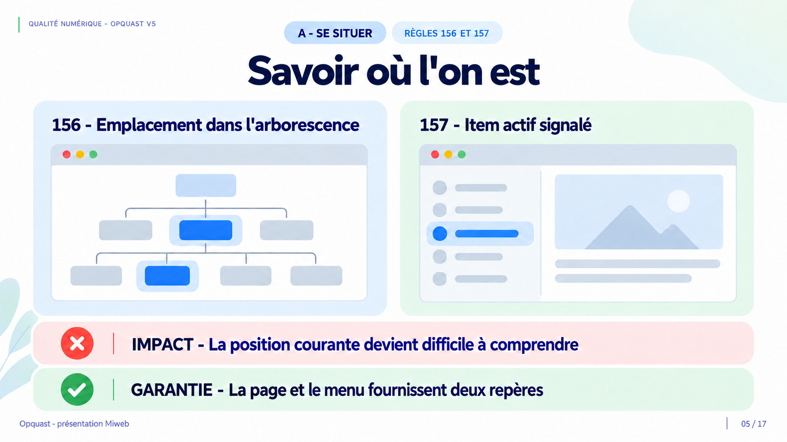
Règle 156
Chaque page affiche une information permettant de connaître son emplacement dans l'arborescence.
Règle 157
Les items actifs de menu sont signalés.
Impact
La position courante devient difficile à comprendre.
Garantie
La page et le menu fournissent deux repères.
Message à retenir
La page et le menu confirment la position courante.
Deux repères complémentaires
- Ces deux repères répondent à deux questions différentes : où se trouve cette page dans l'arborescence, et quelle rubrique suis-je en train de consulter ?
Impact du non-respect
- L'utilisateur voit le contenu sans comprendre sa relation avec les niveaux parents.
- Il doit mémoriser son parcours ou reparcourir le menu pour retrouver sa position.
Ce que garantit la règle
- La page indique sa place dans la structure du service.
- Le menu confirme la section actuellement consultée.
Transition
Ces repères restent utiles seulement s'ils sont stables et compréhensibles.
Slide 6 - Des repères stables et explicites
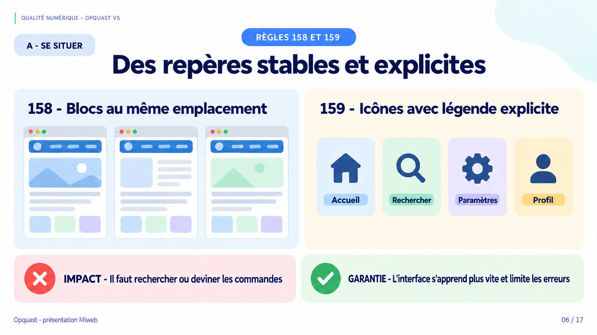
Règle 158
Les blocs de navigation de même nature sont affichés aux mêmes emplacements sur toutes les pages.
Règle 159
Les icônes de navigation sont accompagnées d'une légende explicite.
Impact
Il faut rechercher ou deviner les commandes.
Garantie
L'interface s'apprend plus vite et limite les erreurs.
Message à retenir
L'interface s'apprend plus vite et limite les erreurs.
Deux conditions d'apprentissage
- La stabilité répond à la question « où chercher ? » ; la légende explicite répond à la question « que fait cette icône ? ».
Impact du non-respect
- Chaque page impose une nouvelle recherche visuelle.
- Une icône ambiguë provoque hésitation ou erreur d'activation.
Ce que garantit la règle
- Les repères spatiaux restent prévisibles.
- La fonction des icônes est compréhensible.
Transition
Une interface comprise doit ensuite permettre d'atteindre directement ses zones utiles.
Slide 7 - Accéder directement aux grandes zones
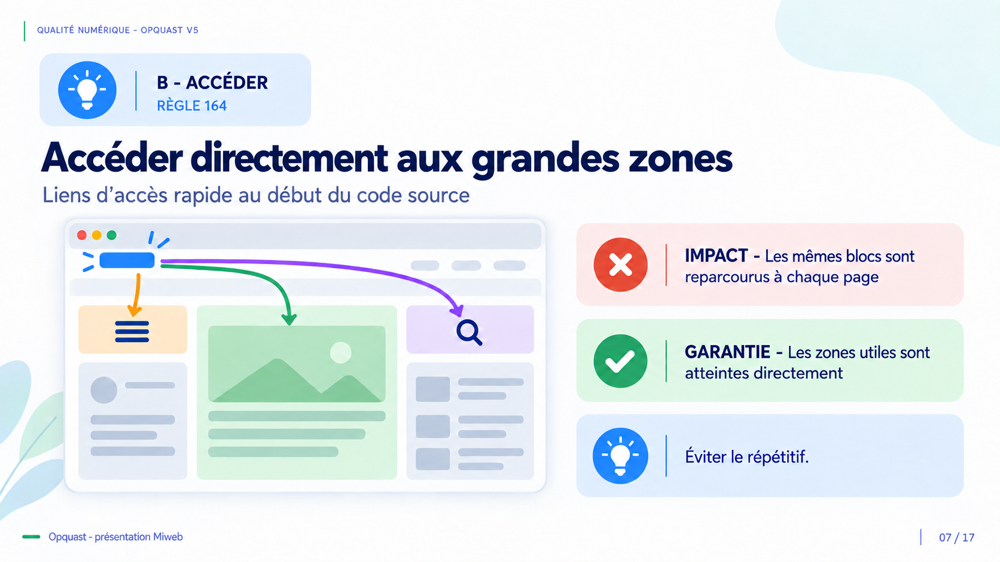
Règle 164
Chaque page contient des liens d'accès rapide placés au début du code source.
Impact
Les mêmes blocs sont reparcourus à chaque page.
Garantie
Les zones utiles sont atteintes directement.
Message à retenir
Éviter le répétitif.
Situation
- Une navigation linéaire rencontre d'abord l'en-tête, le menu et les autres blocs répétés.
- Sans raccourci, ce trajet recommence à chaque changement de page.
Impact du non-respect
- L'utilisateur au clavier ou en consultation linéaire doit franchir de nouveau les mêmes éléments.
Ce que garantit la règle
- Des liens placés au début du code source donnent un accès direct aux zones utiles prévues par la page.
- Les grandes régions HTML peuvent compléter ce dispositif, mais ne remplacent pas les liens d'accès rapide exigés par la règle.
Transition
L'accès direct accélère le parcours, mais il faut aussi prévoir plusieurs chemins vers l'information.
Slide 8 - Retrouver l'information autrement
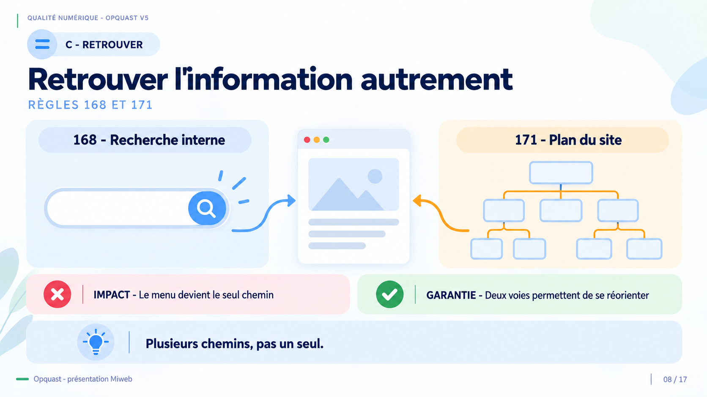
Règle 168
Un moteur de recherche interne est proposé.
Règle 171
Un plan du site est disponible depuis chaque page.
Impact
Le menu devient le seul chemin.
Garantie
Deux voies permettent de se réorienter.
Message à retenir
Plusieurs chemins, pas un seul.
Deux chemins complémentaires
- La recherche interne répond à un besoin formulé par mots-clés.
- Le plan du site donne une vue structurée pour explorer ou se réorienter.
Impact du non-respect
- L'utilisateur dépend du classement choisi dans le menu, même s'il connaît précisément ce qu'il cherche.
Ce que garantit la règle
- La recherche permet de cibler une information ; le plan du site fournit une vue d'ensemble accessible depuis chaque page.
Point de vigilance
- Le plan du site destiné aux personnes est une page navigable, pas le fichier sitemap XML destiné aux robots.
Transition
Une recherche utile doit également pouvoir être conservée, corrigée et relancée.
Slide 9 - Reprendre une recherche
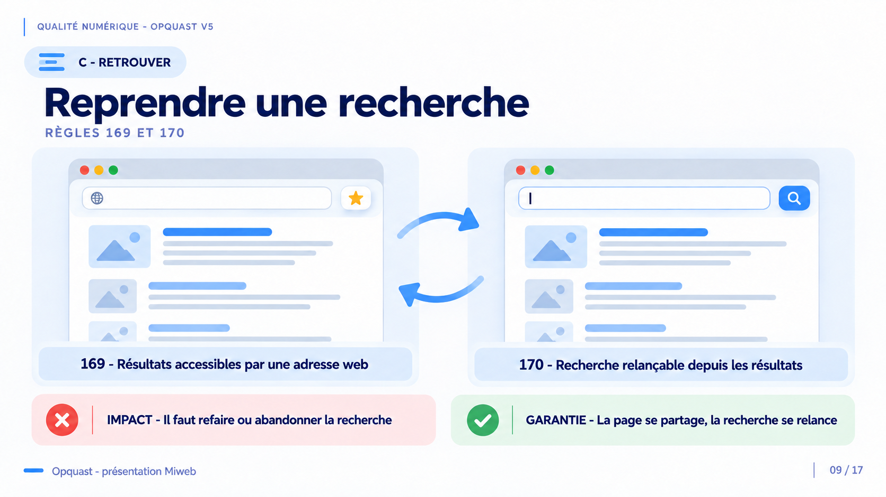
Règle 169
Chaque page de résultats de recherche peut être atteinte via une adresse web.
Règle 170
Il est possible de relancer une recherche depuis sa page de résultats.
Impact
Il faut refaire ou abandonner la recherche.
Garantie
La page se partage, la recherche se relance.
Message à retenir
La page se partage, la recherche se relance.
Continuité de la recherche
- La page de résultats possède une adresse qui peut être retrouvée, enregistrée ou transmise.
- Le formulaire reste disponible sur cette page, avec la requête précédente, pour la corriger ou l'affiner.
Impact du non-respect
- Une page de résultats utile devient impossible à conserver ou à partager.
- Une erreur de saisie oblige à revenir en arrière ou à recommencer.
Ce que garantit la règle
- La page de résultats est atteignable par son adresse.
- La recherche peut être relancée immédiatement depuis les résultats.
Transition
Ces chemins restent incomplets si leur utilisation dépend d'une souris.
Slide 10 - Voir où se trouve le focus
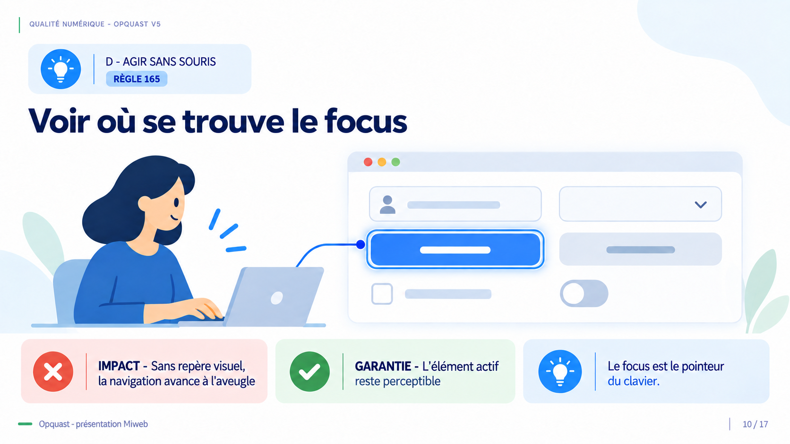
Règle 165
Le focus clavier n'est ni supprimé ni masqué.
Impact
Sans repère visuel, la navigation avance à l'aveugle.
Garantie
L'élément actif reste perceptible.
Message à retenir
Le focus est le pointeur du clavier.
Situation
- Au clavier, le focus indique quel lien, bouton ou champ recevra la prochaine action.
- S'il est supprimé ou masqué, le déplacement continue mais sa position n'est plus perceptible.
Impact du non-respect
- Une personne voyante utilisant le clavier avance sans savoir quel élément est actif.
Ce que garantit la règle
- Le repère de focus reste visible sur les éléments interactifs.
Limite du propos
- Cette règle exige de ne pas supprimer ou masquer le focus. Elle ne fixe pas ici un seuil de contraste chiffré.
Transition
Voir le focus est indispensable, mais cela ne garantit pas encore que l'action soit possible.
Slide 11 - Accomplir la tâche au clavier
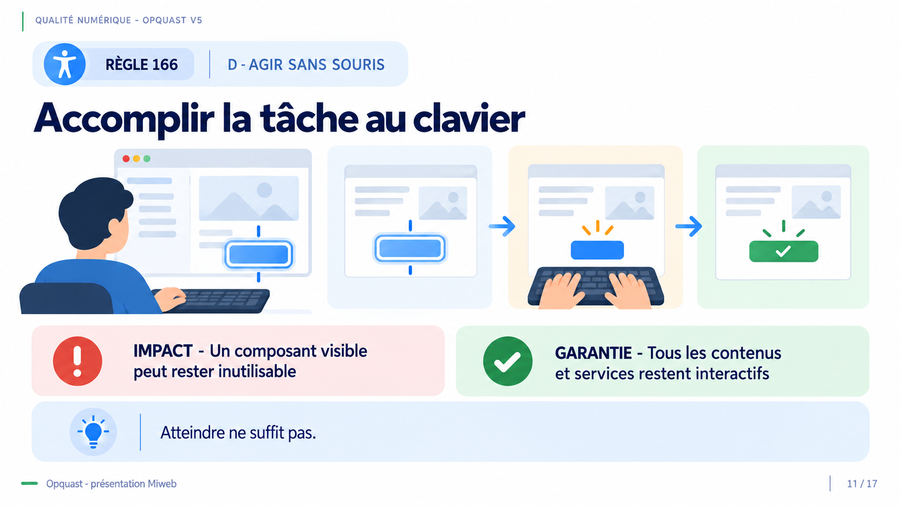
Règle 166
La navigation au clavier permet d'interagir avec l'intégralité des contenus et services.
Impact
Un composant visible peut rester inutilisable.
Garantie
Tous les contenus et services restent interactifs.
Message à retenir
Atteindre ne suffit pas.
Situation
- Recevoir le focus n'est que la première étape.
- Le composant doit aussi pouvoir être ouvert, modifié, validé ou fermé avec les commandes clavier adaptées.
Impact du non-respect
- Une personne atteint le contrôle mais reste bloquée avant la fin de sa tâche.
Ce que garantit la règle
- Les contenus et services peuvent être réellement utilisés au clavier, pas seulement parcourus.
Transition
L'action doit enfin s'inscrire dans un ordre que l'utilisateur peut prévoir.
Slide 12 - Suivre un ordre prévisible
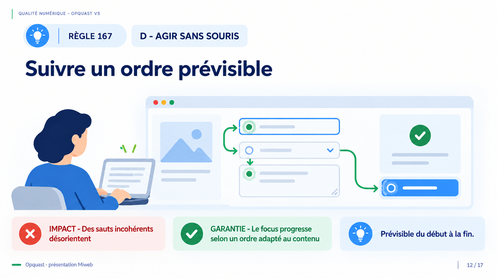
Règle 167
La navigation au clavier s'effectue dans un ordre prévisible.
Impact
Des sauts incohérents désorientent.
Garantie
Le focus progresse selon un ordre adapté au contenu.
Message à retenir
Prévisible du début à la fin.
Situation
- Chaque appui sur Tab déplace le focus vers un nouvel élément interactif.
- La progression doit rester compréhensible par rapport au contenu et cohérente d'une page à l'autre.
Impact du non-respect
- Des sauts inattendus font perdre le fil et peuvent conduire à omettre une commande ou un champ.
Ce que garantit la règle
- Le parcours du focus est prévisible et adapté à l'organisation de la page.
Transition
La maîtrise du clavier prépare une exigence plus large : rester maître de l'interface.
Slide 13 - Naviguer sans popup imposée
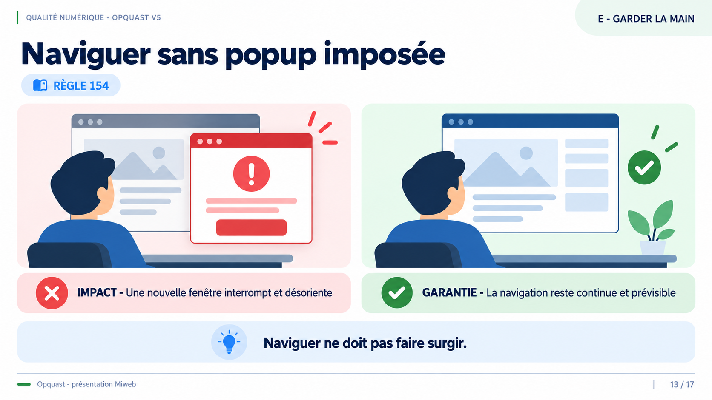
Règle 154
La navigation ne provoque pas l'ouverture de popups.
Impact
Une nouvelle fenêtre interrompt et désoriente.
Garantie
La navigation reste continue et prévisible.
Message à retenir
Naviguer ne doit pas faire surgir.
Situation
- Le simple fait de naviguer dans le site ne doit pas déclencher automatiquement une fenêtre supplémentaire du navigateur.
- La personne doit retrouver le contenu demandé dans un contexte prévisible.
Impact du non-respect
- Une popup interrompt la consultation et déplace l'attention vers un nouveau contexte non demandé.
Ce que garantit la règle
- La navigation interne se poursuit sans ouverture automatique de popup.
Point de vigilance
- Une popup de navigateur et une fenêtre modale intégrée à la page sont deux objets différents.
Transition
Lorsqu'une fenêtre intégrée à la page s'affiche, sa fermeture doit rester immédiatement maîtrisable.
Slide 14 - Fermer sans chercher ni attendre
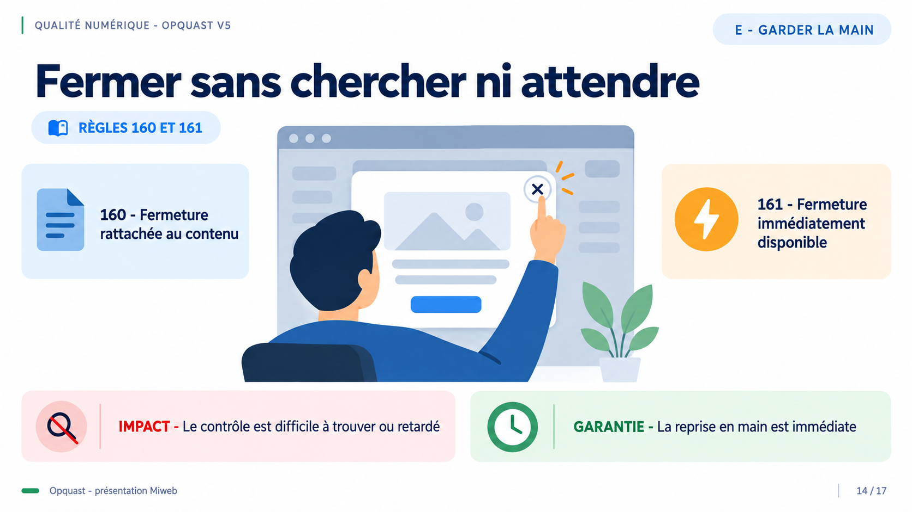
Règle 160
Les mécanismes de fermeture de fenêtres sont visuellement rattachés à leur contenu.
Règle 161
Les mécanismes de fermetures de fenêtres sont immédiatement disponibles.
Impact
Le contrôle est difficile à trouver ou retardé.
Garantie
La reprise en main est immédiate.
Message à retenir
La reprise en main est immédiate.
Deux conditions pour reprendre la main
- Le mécanisme de fermeture doit être visible sans délai et clairement rattaché à la fenêtre concernée.
Impact du non-respect
- L'utilisateur ne sait pas immédiatement ce que la commande va fermer.
- Un délai l'empêche de revenir au contenu principal.
Ce que garantit la règle
- La relation entre la fenêtre et sa commande est claire.
- La fermeture peut être déclenchée immédiatement.
Transition
La fermeture doit aussi être explicite et conserver une position stable.
Slide 15 - Un bouton explicite et stable
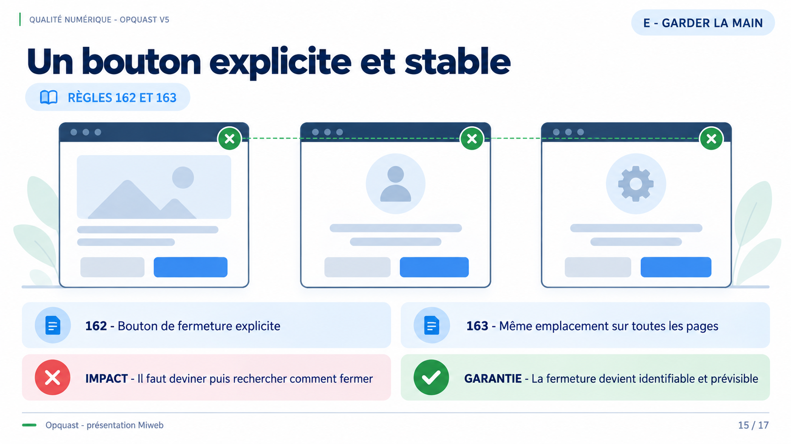
Règle 162
Les nouvelles fenêtres dimensionnées et les fenêtres modales sont dotées d'un bouton de fermeture explicite.
Règle 163
Les mécanismes de fermetures de fenêtres sont affichés aux mêmes emplacements sur toutes les pages.
Impact
Il faut deviner puis rechercher comment fermer.
Garantie
La fermeture devient identifiable et prévisible.
Message à retenir
La fermeture devient identifiable et prévisible.
Deux conditions de prévisibilité
- Pour une fenêtre dimensionnée ou modale, la fermeture repose sur deux repères : un bouton explicite et un emplacement stable.
Impact du non-respect
- L'utilisateur doit deviner un geste, une touche ou une zone cliquable.
- Il doit ensuite rechercher la commande à chaque nouvelle apparition.
Ce que garantit la règle
- La fermeture est identifiable sans deviner.
- Sa position stable permet un apprentissage.
Point de vigilance
- La touche Échap ou le clic hors de la modale peuvent compléter le bouton explicite, mais ne le remplacent pas pour la règle 162.
Transition
Garder la main concerne enfin une contrainte moins visible : le temps imposé.
Slide 16 - Connaître le temps disponible avant d'agir
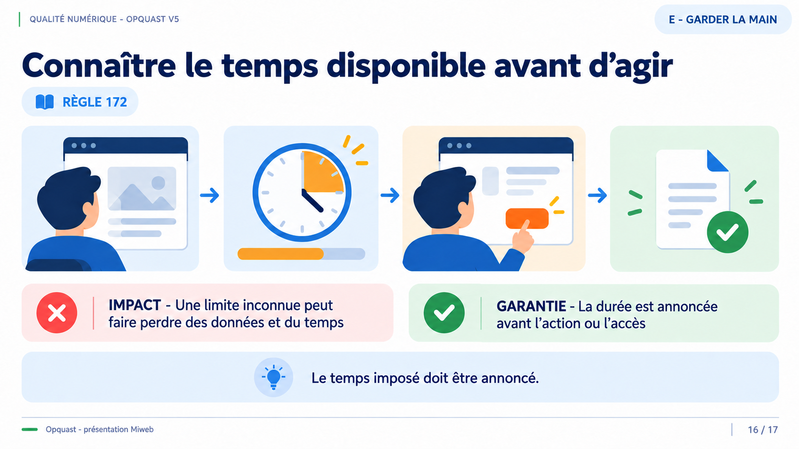
Règle 172
Les limites de temps imposées à une action ou un accès sont indiquées.
Impact
Une limite inconnue peut faire perdre des données et du temps.
Garantie
La durée est annoncée avant l'action ou l'accès.
Message à retenir
Le temps imposé doit être annoncé.
Situation
- Une action, une donnée ou un accès peut n'être disponible que pendant une durée limitée.
- L'utilisateur doit connaître l'existence de cette limite et sa durée avant de commencer.
Impact du non-respect
- Une expiration imprévue peut faire perdre une saisie, du temps ou le bénéfice de l'action engagée.
Ce que garantit la règle
- La contrainte temporelle est annoncée avant l'action ou l'accès concerné.
Point de vigilance
- Une alerte au moment de l'expiration ne remplace pas l'information préalable.
Transition
Ces vingt règles convergent vers une même qualité de parcours.
Slide 17 - Un parcours qui laisse la main
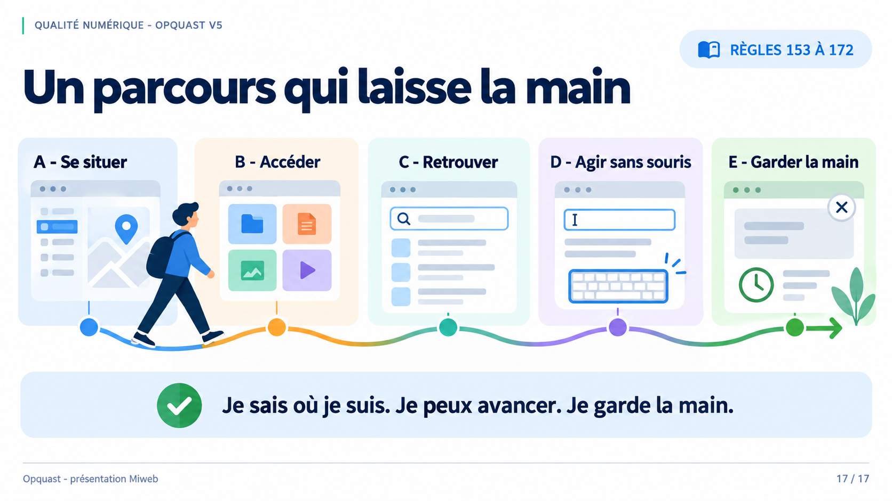
Les cinq garanties du parcours
- A - Se situer
- B - Accéder
- C - Retrouver
- D - Agir sans souris
- E - Garder la main
Périmètre
Règles 153 à 172.
Message final
Je sais où je suis. Je peux avancer. Je garde la main.
Message à retenir
Je sais où je suis. Je peux avancer. Je garde la main.
Résultat attendu
- La personne comprend où elle se trouve et peut revenir à un point connu.
- Elle atteint les zones utiles et dispose de plusieurs chemins pour retrouver l'information.
- Elle accomplit ses tâches au clavier dans un ordre prévisible.
- Elle reste maîtresse des fenêtres et connaît les limites de temps avant d'agir.
Conclusion
Les vingt règles de Navigation construisent un parcours dans lequel l'utilisateur sait où il est, peut avancer et garde la main.
Slide 18 - Du socle au parcours complet
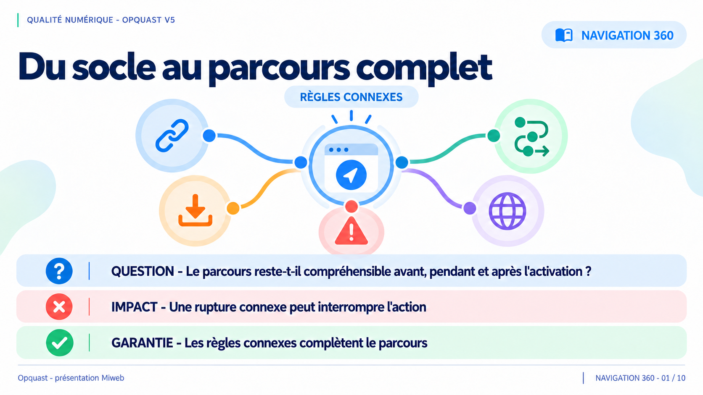
Navigation 360
Du socle au parcours complet
Question
Le parcours reste-t-il compréhensible avant, pendant et après l'activation ?
Impact
Une rupture connexe peut interrompre l'action.
Garantie
Les règles connexes complètent le parcours.
Règles connexes.
Message à retenir
Le parcours utilisateur traverse plusieurs thématiques Opquast sans les confondre.
Une extension du parcours
- Les vingt règles du socle restent la référence officielle de la thématique Navigation.
- Un utilisateur rencontre pourtant des liens, des fichiers, des erreurs, des formulaires en plusieurs étapes et parfois plusieurs langues au cours du même parcours.
- Les prochaines slides examinent ces continuités sans déplacer les règles de leur thématique officielle.
Transition
- Le premier approfondissement lève une confusion fréquente entre deux cartes qui n'ont ni le même format ni le même destinataire.
Slide 19 - Deux cartes, deux destinataires
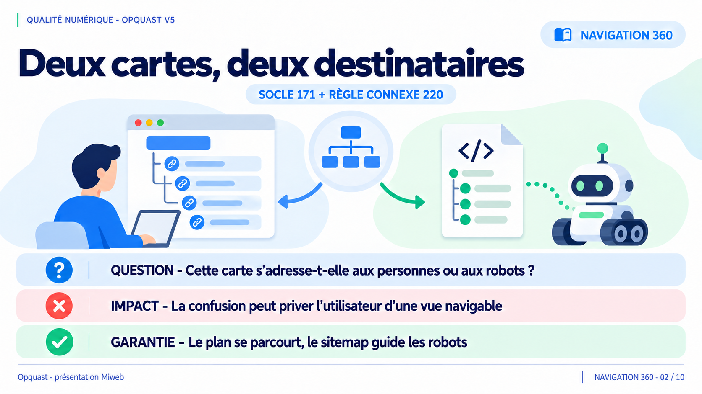
Deux cartes, deux destinataires
Socle 171 et règle connexe 220.
Question
Cette carte s'adresse-t-elle aux personnes ou aux robots ?
Impact
La confusion peut priver l'utilisateur d'une vue navigable.
Garantie
Le plan se parcourt, le sitemap guide les robots.
Message à retenir
Un plan HTML et un sitemap XML répondent à deux usages distincts.
Impact du non-respect
- Livrer uniquement un fichier
sitemap.xmlne fournit aucune page de liens que la personne puisse parcourir. - L'équipe peut croire la règle 171 traitée alors que le dispositif destiné aux utilisateurs manque toujours.
Ce que garantissent les règles
- La règle 171 fournit une page ou un ensemble de pages dont les liens organisés reflètent l'arborescence.
- La règle 220 fournit séparément aux robots la liste des contenus à explorer.
Transition
- Une carte aide à choisir un chemin global ; chaque lien doit ensuite être repérable et compréhensible avant d'être suivi.
Slide 20 - Repérer et comprendre chaque lien
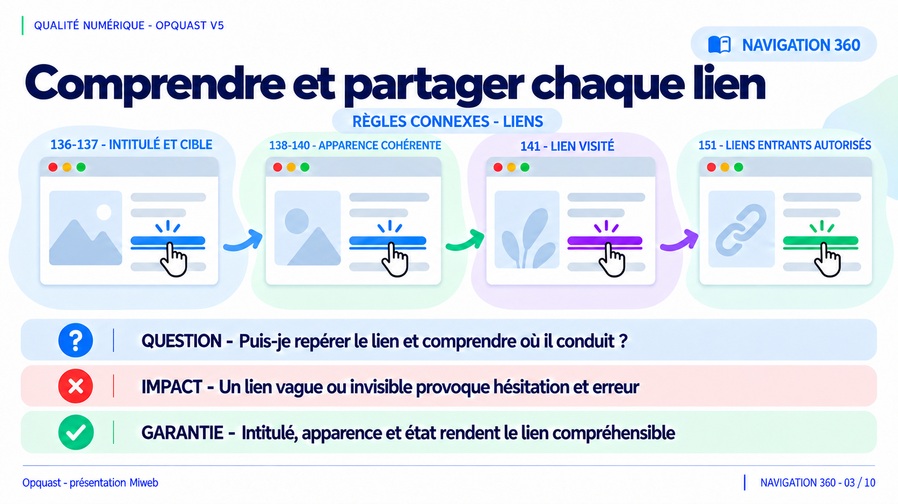
Repérer et comprendre chaque lien
Règles connexes 136 à 141.
Question
Puis-je repérer le lien et comprendre où il conduit ?
Impact
Un lien vague ou invisible provoque hésitation et erreur.
Garantie
Intitulé, apparence et état rendent le lien compréhensible.
Message à retenir
Un lien se comprend avant le clic et reste reconnaissable après la visite.
Impact du non-respect
- Une URL brute ou un libellé comme « cliquer ici » n'indique pas utilement la cible.
- Un texte souligné qui n'est pas un lien suggère une action inexistante, tandis qu'un lien indiscernable peut ne jamais être activé.
Ce que garantissent les règles
- Un intitulé descriptif et une présentation cohérente permettent d'identifier la fonction du lien dans toutes les pages.
- La distinction des états visités aide à reconnaître les contenus déjà explorés et ceux qui restent à découvrir.
Transition
- Reconnaître un lien ne suffit pas lorsque son activation change de contexte, ouvre un outil ou déclenche une redirection.
Slide 21 - Anticiper ce que l'activation déclenche
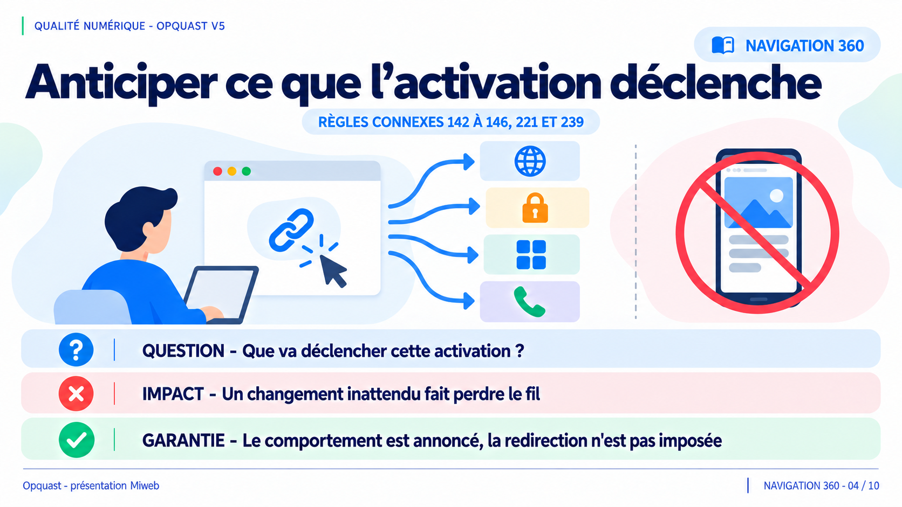
Anticiper ce que l'activation déclenche
Règles connexes 142 à 146, 221 et 239.
Question
Que va déclencher cette activation ?
Impact
Un changement inattendu fait perdre le fil.
Garantie
Le comportement est annoncé, la redirection n'est pas imposée.
Message à retenir
Le changement de contexte doit être prévisible et le choix doit rester possible.
Impact du non-respect
- Quitter le service, rencontrer un accès réservé, ouvrir une messagerie ou changer de fenêtre sans avertissement rompt les repères.
- Une redirection forcée vers une version mobile ou un rafraîchissement côté client retire le choix et peut interrompre la consultation.
Ce que garantissent les règles
- Les indices associés aux liens permettent d'anticiper une cible externe, un accès limité, un logiciel ou une nouvelle fenêtre.
- Le protocole téléphonique rend le numéro activable, tandis que les règles 221 et 239 préservent le choix du contexte de consultation.
Transition
- La même exigence de décision préalable s'applique aux fichiers proposés en téléchargement.
Slide 22 - Décider avant de télécharger
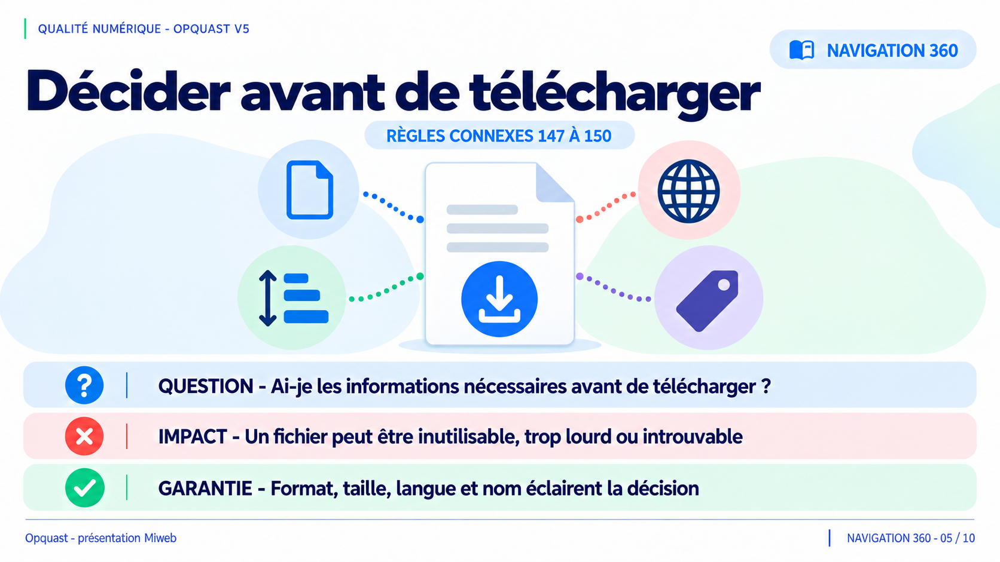
Décider avant de télécharger
Règles connexes 147 à 150.
Question
Ai-je les informations nécessaires avant de télécharger ?
Impact
Un fichier peut être inutilisable, trop lourd ou introuvable.
Garantie
Format, taille, langue et nom éclairent la décision.
Message à retenir
Un téléchargement se décide avant l'ouverture du fichier.
Impact du non-respect
- La compatibilité du fichier n'est découverte qu'après le transfert et une taille inconnue peut être coûteuse en mobilité.
- Une langue différente non annoncée ou un nom générique rend le document inutile ou difficile à retrouver.
Ce que garantissent les règles
- Le format est indiqué pour tous les fichiers et la taille pour les fichiers internes.
- La langue est précisée lorsqu'elle diffère de la page, et le nom d'un fichier interne permet d'en identifier le contenu et la provenance.
Transition
- Même avec des destinations explicites, une adresse peut échouer ; le parcours doit alors offrir une reprise.
Slide 23 - Reprendre après une rupture
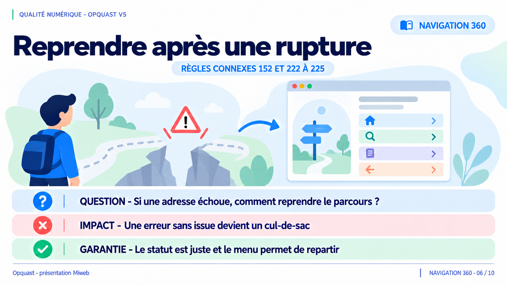
Reprendre après une rupture
Règles connexes 152 et 222 à 225.
Question
Si une adresse échoue, comment reprendre le parcours ?
Impact
Une erreur sans issue devient un cul-de-sac.
Garantie
Le statut est juste et le menu permet de repartir.
Message à retenir
Une erreur technique ne doit pas devenir une rupture de navigation.
Impact du non-respect
- Un lien interne cassé interrompt un trajet qui pouvait être contrôlé avant publication.
- Une fausse réponse 200 ou une page serveur générique brouille la nature de l'erreur, et l'absence de menu laisse un cul-de-sac.
Ce que garantissent les règles
- Le serveur associe la ressource absente au code 404 et l'accès interdit au code 403, avec une page adaptée dans les deux cas.
- Le menu principal présent sur ces pages permet de poursuivre sans dépendre du bouton Précédent.
Transition
- Une reprise visible ne suffit pas si une personne ne peut pas parcourir et accomplir toute la tâche au clavier.
Slide 24 - Tester une tâche entière au clavier
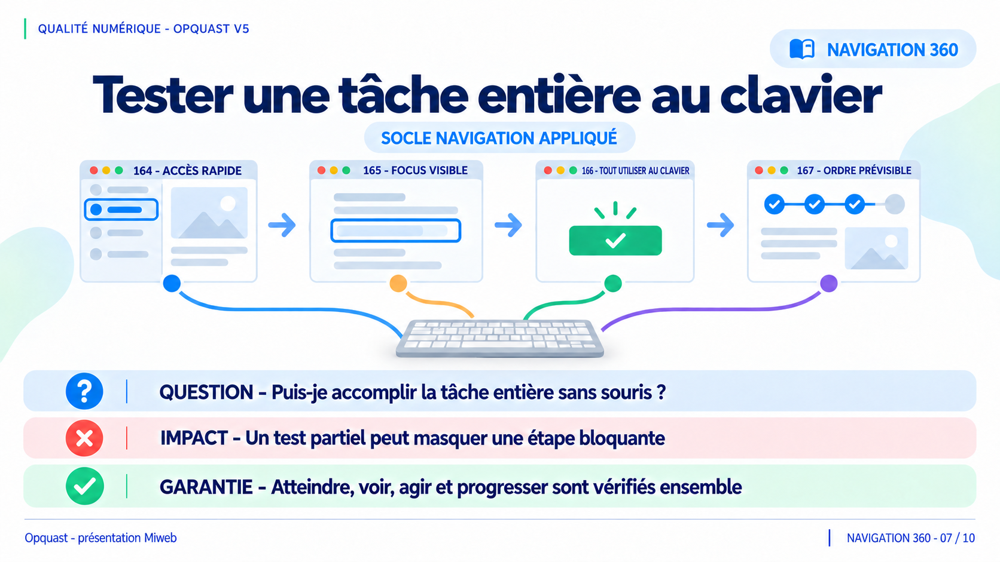
Tester une tâche entière au clavier
Socle appliqué 164 à 167.
Question
Puis-je accomplir la tâche entière sans souris ?
Impact
Un test partiel peut masquer une étape bloquante.
Garantie
Atteindre, voir, agir et progresser sont vérifiés ensemble.
Message à retenir
La réussite se mesure à la tâche accomplie, pas au premier focus atteint.
Impact du non-respect
- Tester un seul bouton peut masquer un menu infranchissable, un focus devenu invisible ou une étape impossible à activer plus loin.
- Sans accès rapide, le même trajet à travers les blocs répétés recommence à chaque page.
Ce que garantissent les règles
- Le test suit la tâche depuis le premier raccourci jusqu'au résultat, avec un focus toujours perceptible.
- Chaque interaction nécessaire fonctionne et l'ordre reste prévisible pendant tout le parcours.
Transition
- Dans une démarche composée de plusieurs pages, la continuité dépend aussi de la position dans le processus, du retour en arrière et de la conservation des données.
Slide 25 - Avancer sans perdre le travail accompli
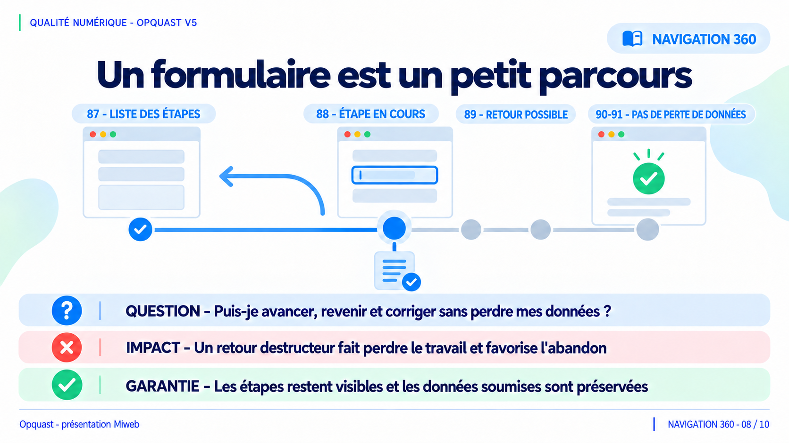
Avancer sans perdre le travail accompli
Règles connexes 87 à 91.
Question
Puis-je avancer, revenir et corriger sans perdre mes données ?
Impact
Un retour destructeur fait perdre le travail et favorise l'abandon.
Garantie
Les étapes restent visibles et les données soumises sont préservées.
Message à retenir
Revenir dans une démarche ne doit pas effacer ce qui a déjà été accompli.
Impact du non-respect
- Une démarche dont la longueur et la position courante restent inconnues peut donner le sentiment d'être piégé.
- Un retour impossible ou destructeur augmente les erreurs, la perte de saisie et le risque d'abandon.
Ce que garantissent les règles
- La liste des étapes, l'étape courante et le retour à l'étape précédente rendent l'avancement vérifiable.
- Les données soumises sont préservées et toute perte liée à l'historique est annoncée avant qu'elle ne surprenne l'utilisateur.
Transition
- Une continuité comparable est attendue lorsque la personne passe d'une langue à une autre.
Slide 26 - Changer de langue sans perdre la page
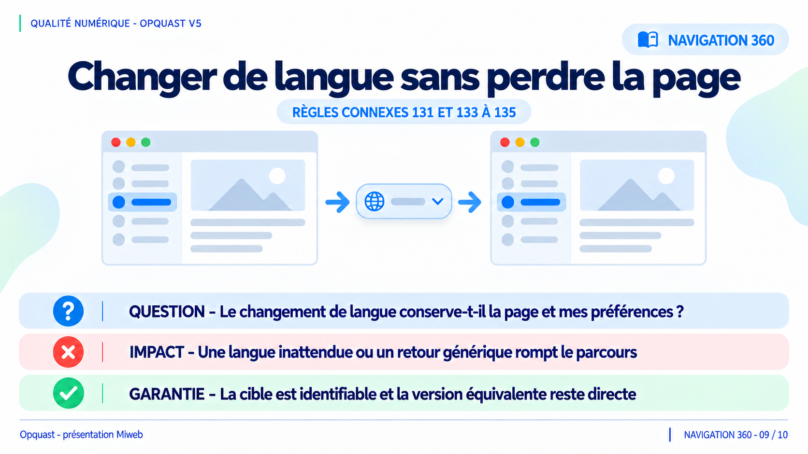
Changer de langue sans perdre la page
Règles connexes 131 et 133 à 135.
Question
Le changement de langue conserve-t-il la page et mes préférences ?
Impact
Une langue inattendue ou un retour générique rompt le parcours.
Garantie
La cible est identifiable et la version équivalente reste directe.
Message à retenir
Changer de langue ne doit pas faire recommencer la navigation.
Impact du non-respect
- Une langue découverte seulement après l'activation provoque un clic inutile pour les personnes qui ne la comprennent pas.
- Un sélecteur qui renvoie vers l'accueil de l'autre langue fait perdre la page et le niveau déjà atteints.
Ce que garantissent les règles
- La langue de la cible est identifiable et le lien vers la version équivalente est rédigé dans cette langue.
- La traduction de la page courante est atteinte directement et le serveur respecte l'ordre de langues déclaré par l'outil de consultation.
Transition
- Ces approfondissements convergent vers trois capacités : prévoir ce qui va se passer, poursuivre l'action et reprendre après une rupture.
Slide 27 - Prévoir, poursuivre, reprendre
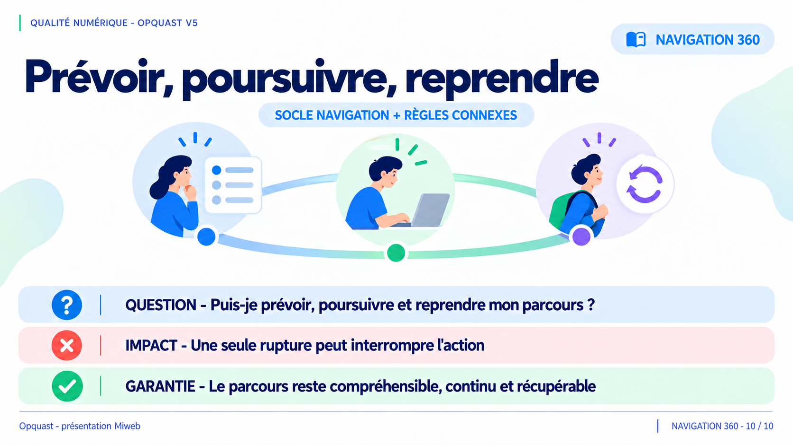
Prévoir, poursuivre, reprendre
Question
Puis-je prévoir, poursuivre et reprendre mon parcours ?
Impact
Une seule rupture peut interrompre l'action.
Garantie
Le parcours reste compréhensible, continu et récupérable.
Socle Navigation et règles connexes.
Message à retenir
Une navigation de qualité reste prévisible, praticable et récupérable de bout en bout.
Trois capacités complémentaires
- Prévoir consiste à connaître la nature d'un lien, son comportement ou les caractéristiques d'un fichier avant de l'activer.
- Poursuivre consiste à accomplir la tâche avec le mode d'interaction, la langue et le chemin adaptés, sans perdre les données déjà fournies.
- Reprendre consiste à retrouver une voie praticable lorsque la ressource manque, que l'accès est interdit ou qu'une étape doit être corrigée.
Conclusion
- Le socle Navigation et les règles connexes décrivent ensemble un parcours dans lequel la personne peut comprendre, décider, agir et se réorienter.